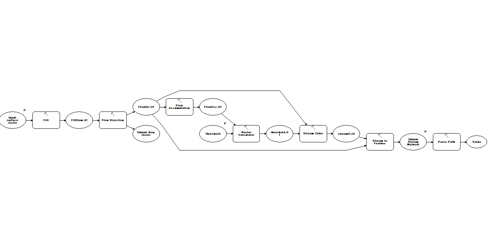
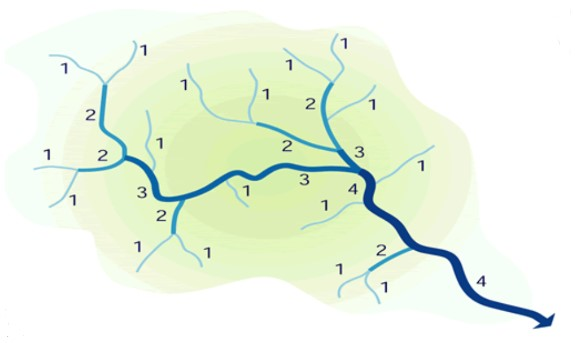

How a DEM becomes a stream network
One real tool from the archive: an ArcGIS Model Builder pipeline that replaces six manual hydrology operations with one push-button run.
Step 1
Raw DEM input
A digital elevation model and a threshold value go in — the same two inputs regardless of the watershed.

Step 2
Six operations, one tool
Fill, flow direction, flow accumulation, stream definition, stream link, and vectorization run automatically in ArcGIS Model Builder.

Step 3
A stream network, ready to use
What used to be a manual, error-prone chain is now ~83% less hands-on work — and a clean output layer.